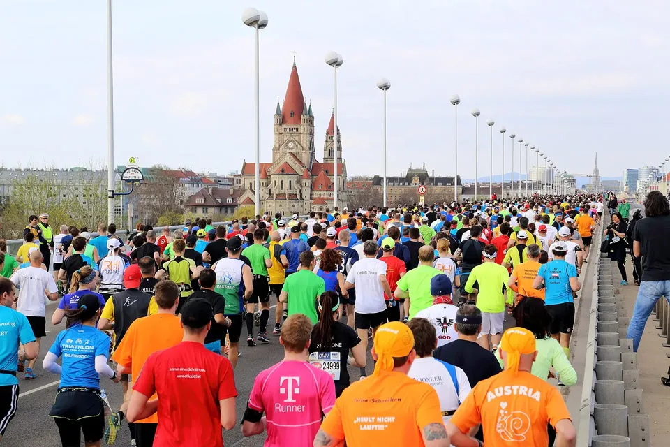

Stronger legs, faster miles: 7 strength moves every runner needs
Vienna City Marathon 2015, Reichsbrücke. Photo: C.Stadler/Bwag, Wikimedia Commons, CC BY-SA 4.0
Running makes you strong – but a little strength work makes you a better runner. You don't need a gym membership or heavy weights: two short sessions a week with a handful of basic moves will do. Here's why it pays off and how to get started.
Why strength makes you faster
Every stride is a mini jump. When your foot hits the ground, your body absorbs your weight; when you push off, it drives you forward. Strong legs and hips and a stable core make that movement more efficient. Runners call it running economy – you burn less energy at the same pace.
That's exactly what the research shows: ambitious runners who add strength and jump training two or three times a week run more economically within eight to twelve weeks[1]. Their race times over distances up to 10 km often improve too – and their finishing kick gets sharper[2].
Stronger, tougher, more resilient
Strength isn't only about speed. Runners who do regular strength work stay fit far more often and keep training without forced breaks – a large review of many studies found strength training especially effective here[4]. And the World Health Organization recommends muscle-strengthening exercise for all adults anyway, on top of endurance training[5].
“Won't it make me bulky?”
Nope. It's the most common worry – and it's unfounded. Runners who added heavy squats to their training for eight weeks got much stronger and ran more economically, but didn't gain any weight[3]. Across many studies, strength training doesn't change runners' body composition for the worse[2]. All that running makes sure you won't end up with bodybuilder legs.
The seven best moves
Every exercise uses your own body weight – at home, in the park or after your club run. Once they start to feel easy, add a backpack with a few water bottles, or some dumbbells.
| Exercise | What it does for you |
|---|---|
| Squat | thighs and glutes – the engine behind every stride |
| Lunge | single-leg strength, just like running |
| Single-leg deadlift | hamstrings and balance |
| Calf raise | calves and Achilles for a powerful push-off |
| Glute bridge | glutes that keep your hips stable as you run |
| Plank and side plank | a rock-solid core |
| Skipping rope or skips | springy legs and a bouncy stride |
How to fit it in
- Twice a week, 20 to 30 minutes each. That's enough to get noticeably stronger[2].
- Two or three rounds of 8 to 12 reps per exercise; hold planks for 20 to 40 seconds.
- After an easy run or on a rest day – not the day before your long run or a hard interval session.
- Form first, weight second: slow and controlled wins. Only add load once every rep feels easy.
- Stick with it: the benefits kick in after a few weeks. Winter, when the long runs are shorter, is the perfect time to start – more ideas in “Winter running”.
Your starter circuit (25 minutes): 5 minutes of easy jogging or skipping, then 12 squats, 10 lunges per leg, 15 calf raises, 12 glute bridges, a 30-second plank and a 20-second side plank on each side. Catch your breath and repeat twice more. Done!
What about race week?
Before a big race, dial your strength work down: in the last seven to ten days, one short, light session is plenty, so your legs feel fresh at the start. How to plan the rest of that week is in our tapering guide.
The bottom line
A little strength goes a long way: you'll run more efficiently, get faster and stay injury-free for longer – without bulking up. Two 25-minute sessions a week, a few basic moves, and your next race will feel easier.
Set yourself a goal
With a race on the calendar, it's easier to stay on track. Find your next run – or a running group near you to make training more fun.
Sources
- Balsalobre-Fernández C., Santos-Concejero J., Grivas G. V.: Effects of Strength Training on Running Economy in Highly Trained Runners: A Systematic Review With Meta-Analysis of Controlled Trials. J Strength Cond Res 2016;30:2361–2368. doi:10.1519/JSC.0000000000001316
- Blagrove R. C., Howatson G., Hayes P. R.: Effects of Strength Training on the Physiological Determinants of Middle- and Long-Distance Running Performance: A Systematic Review. Sports Med 2018;48:1117–1149. PMC5889786
- Støren Ø., Helgerud J., Støa E. M., Hoff J.: Maximal strength training improves running economy in distance runners. Med Sci Sports Exerc 2008;40:1087–1092. doi:10.1249/MSS.0b013e318168da2f
- Lauersen J. B., Bertelsen D. M., Andersen L. B.: The effectiveness of exercise interventions to prevent sports injuries: a systematic review and meta-analysis of randomised controlled trials. Br J Sports Med 2014;48:871–877. doi:10.1136/bjsports-2013-092538
- Bull F. C. et al.: World Health Organization 2020 guidelines on physical activity and sedentary behaviour. Br J Sports Med 2020;54:1451–1462. PMC7719906
All sources accessed on 5 November 2026. The choice of exercises, the starter circuit and the race-week tips are based on experience.


.JPG){kind=link}